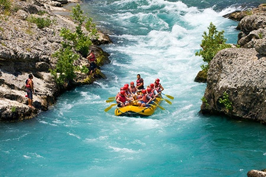

Nossa missão é proporcionar experiências inesquecíveis de rafting, combinando aventura, segurança e contato com a natureza.


Nossa missão é proporcionar experiências inesquecíveis de rafting, combinando aventura, segurança e contato com a natureza.
A Rafting Aventura nasceu da paixão por esportes ao ar livre e pelo desejo de compartilhar experiências emocionantes nas corredeiras.
A Rafting Aventura conta com uma equipe dedicada à organização de experiências seguras e emocionantes nas corredeiras.
A direção é responsável pelo planejamento dos passeios, pela organização das atividades e pela qualidade do atendimento.
Os guias e instrutores acompanham os participantes, apresentam as orientações de segurança e auxiliam durante as atividades de rafting.
Conheça algumas das experiências que a Rafting Aventura oferece para quem deseja explorar a natureza e viver momentos emocionantes.
Uma experiência introdutória para quem deseja conhecer o rafting, com orientações de segurança e acompanhamento de guias.
Uma atividade para quem procura mais emoção, com percursos pelas corredeiras e contato direto com a natureza.
Uma experiência voltada para famílias, amigos e equipes que desejam compartilhar momentos de aventura e cooperação.